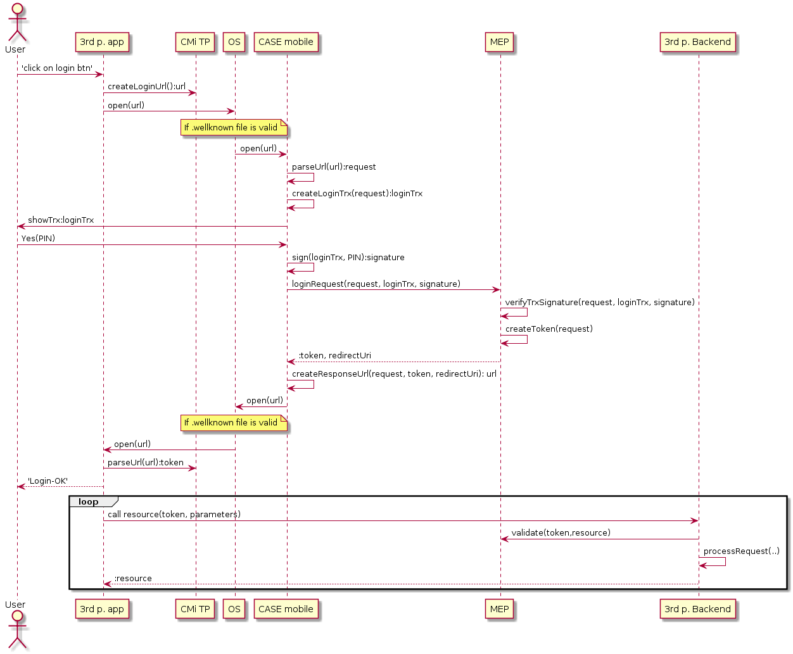
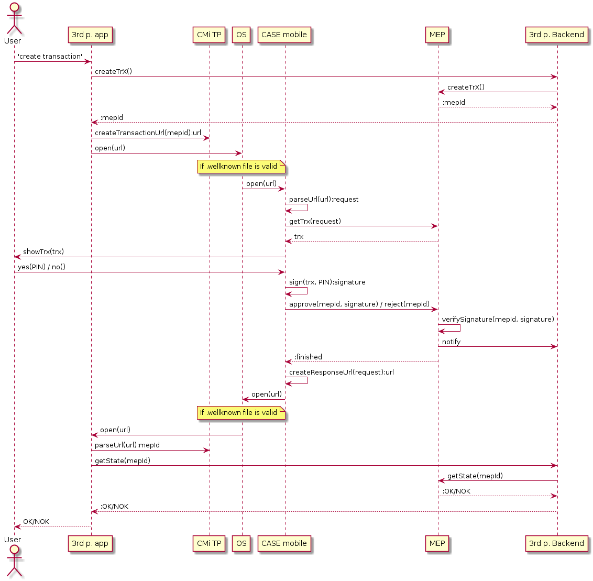

Scenarios Reference
Scenarios Reference
Scenarios
CMi SDK v4 supports 2 main scenarios:
- user authentication using CASE mobile
- transaction authorization using CASE mobile
User authentication using CASE mobile
It’s very common, that applications require some form of logging in, before user can use main functionality. CMi applications could rely on CASE identity of user. Instead of forcing him to enter his credentials, application can redirect him to CASE mobile application to confirm his new login operation. User is used to CASE mobile environment, so confirming login operation should not be problem for him.
CASE mobile will handle whole login process. If user approves login operation, CASE mobile will get access token (or authentication code) from MEP and pass it back to TPA. User can also reject login operation. It that case, CASE mobile will return error code to TPA.
After TPA got token (or code) from MEP, it can access resources that require authentication. 
Authorize transaction using CASE mobile
Some of operations initialized from TPA may require additional authorization from user. Backend service of TPA should initialize operation in MEP system and send ID (called mepId) of such operation back to TPA.
With mepId, TPA can redirect user to CASE mobile application (using method of CMi TP). CASE mobile will visualize what application requested what operation with some others information useful for user to decide if he wants to authorize shown request.
After user authorizes or rejects operation in CASE mobile, TPA will receive response with result code. It should check if operation was approved or rejected with its backend server using same mepId.
Usage of A/U links also made possible that TPA’s backend can also return whole URL, that will be used by TPA to open CASE mobile directly (without using CMi TP component). 